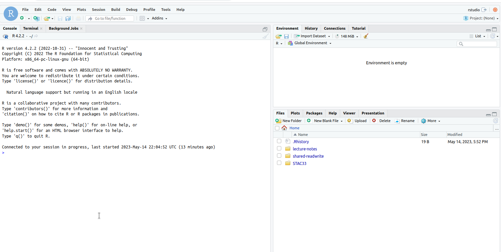
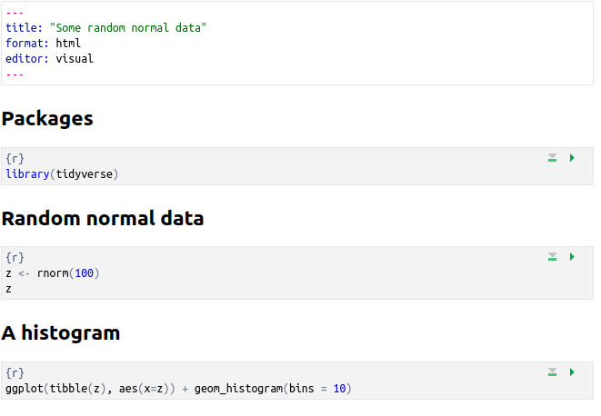
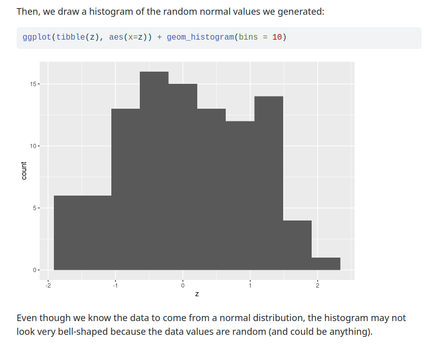
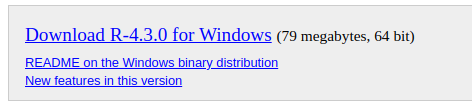
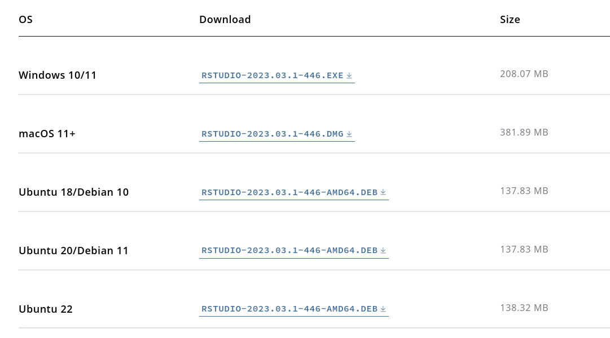
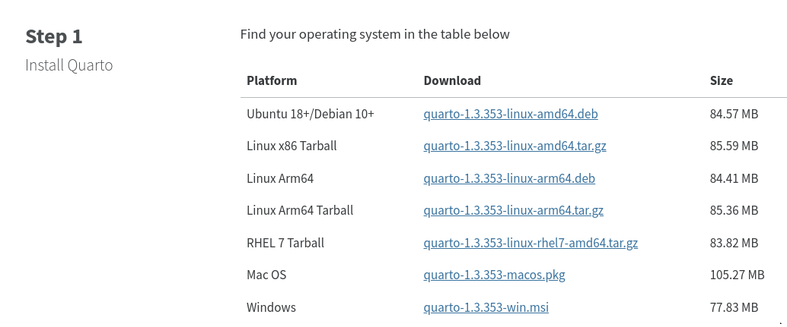

Running R
Running R online
Go to https://r.datatools.utoronto.ca.
You should see this:
If you do, find the line that says “after logging in, open” and click the button next to R Studio to make it blue. Then click the orange Log In to Start, and log in with UTorID and password. (You might need to enter your utoronto.ca email first.)
How R Studio looks

If you are already signed in with UTorID and password, you might come directly here. (If you look at the URL that you are now at, you’ll see that it has your email address in it.)
Projects
- Each user has a “workspace”, a place where all your work is stored.
- Within that workspace, you can have as many Projects as you like.
- To create a new Project, click on the blue New Project button.
- I recommend having one project per course.
- R Studio restarts where you left off.
Make a new project
- Call it what you like. Mine is called
thing: - Select:
- File,
- New Project,
- New Directory,
- New Project (again),
- give it a name and click Create Project.
- You see the name of your new project top right.
R Notebooks
- At left of previous view is Console, where you can enter R commands and see output.
- A better way to work is via “Quarto Documents”. These allow you to combine narrative, code and output in one document.
- Data analysis is always a story: not only what you did, but why you did it, with the “why” being more important.
- To create a new Quarto Document, select File, New File, Quarto Document. Give it a title. This brings up an example document as over.
The template document

About this document
- It begins with a title (that you can change).
- Most of the document is text (narrative).
- Pieces beginning with
{r}, in grey, are called code cells (code chunks). They contain R code. - Run code cells by clicking on the green “play button” at the top right of the first cell. This one does some very exciting arithmetic.
After running the code chunk

Making our own document 1/2
- Create another new document. Give it a title of “Some random normal data”, and click Create. When the document opens, delete the template that it gives you (leaving only the five or so lines that begin and end with
---). - You will probably be sitting on a line that says (greyed out) Heading 2. On this line, type Packages (which you’ll see big and bold like a title) and hit Enter a couple of times. At the top of the window, on the line with Visual, Format, Insert, and Table, it should now say Normal (which is normal text). If you want a heading, click the arrow to the right of Normal and select one. Header 2 is a good one for section titles in your document.
Making our own document 2/2
- Make a new code chunk by clicking Insert (at the top of the notebook window) and selecting Code Cell and R. Inside that cell, type
library(tidyverse). - Below that, make another “Header 2” and put “Random normal data” on that line.
- Make another new code cell below that, and insert two lines of code:
z <- rnorm(100)and thenz. - Below that, make another Header 2, “A histogram”, and a code cell containing
ggplot(tibble(z), aes(x=z)) + geom_histogram(bins = 10).
My document

Run the chunks
- Now run each of the three chunks in order. You’ll see output below each one, including a histogram below the last one.
- When it works, add some narrative text before the code chunks explaining what is going to be done, and some text after describing what you see.
- Save the document (File, Save As). You don’t need a file extension.
- Click Render (at the top). This makes an HTML-formatted report, which may appear in another tab of your web browser.
- If you want to edit anything, go back to the Quarto document, change it, save it, and run Render again. For example, you can try putting some of the text in italics or bold. (See Format.)
The end of my (rendered) report

Installing R on your own computer
- Free, open-source. Download and run on own computer.
- Three things:
- R itself (install first)
- R Studio (front end)
- Quarto (for writing reports).
Downloading R
- Go to https://www.r-project.org/.

Click Download R.
R is stored on numerous “mirrors”, sites around the world. The top one, “0-Cloud”, picks one for you. Or you can choose one close to you (might be faster), eg. U of T:

Click your mirror
- Click 0-Cloud or U of T (or other mirror), get:

- Click on your operating system, eg. Windows.
Click on Base

- Click on “base” here.
The actual download
The version number is, as I write this, 4.3.0, but there may be an update between me writing this and you reading it.
For Windows, click something like the top link below:

- Then install usual way.
- For Mac, install
R-4.3.0-arm64.pkg(Big Sur and newer),R-4.3.0-x86_64.pkg(older), or a newer version if available. - Or, for Linux, click your distribution (eg. Ubuntu), then follow the instructions.
Now, R Studio
Go to https://www.rstudio.com/. You will be redirected to
posit.co, which is the new name of the company that makes R Studio.Top right, click Download R Studio (the blue link).
Scroll down to the non-blue Download R Studio.
There are two choices. You want the free one on the left.
Click left-side Download.
Find the one for you
We already installed R, so no need to do that.
Scroll down to All Installers, and click the installer for your machine (Windows, Mac, several flavours of Linux). Install as usual.

Quarto
The last thing we need is Quarto, so that we can render documents (and thus hand in assignments).
- Go to https://quarto.org/.
- Click on one of the Get Started links.
- Find your operating system and install as usual:

Running R
- All of above only done once.
- To run R, run R Studio, which itself runs R.
How R Studio looks when you run it

that is, just the same as the online one.
First time you run R Studio on your machine, click on Console window, and, next to the
>, typeinstall.packages("tidyverse"). Let it do what it needs to. (You need to do this on your machine. Onr.datatools.utoronto.ca, it’s already been done.)
Projects
- A project is a “container” for code and data that belong together.
- Goes with a folder on some computer.
- File, New Project. You have option to create the new project in a new folder, or in a folder that already exists.
- Use a project for a collection of work that belongs together, eg. data files and Quarto documents for assignments. Putting everything in a project folder makes it easier to find.
- Example: use a project for (all) assignments in a course, a different document within that project for each one.